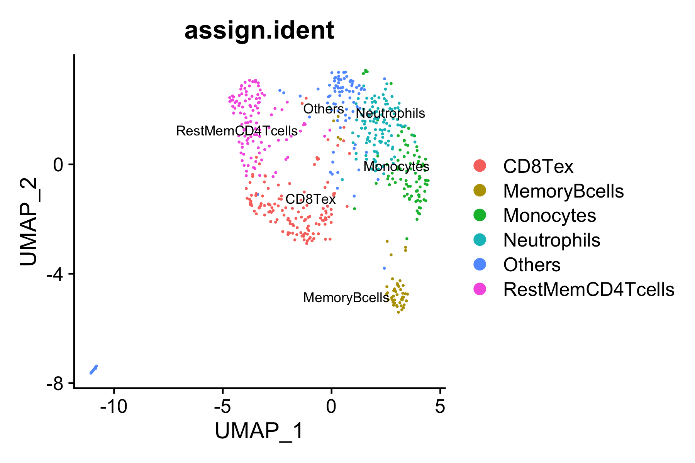
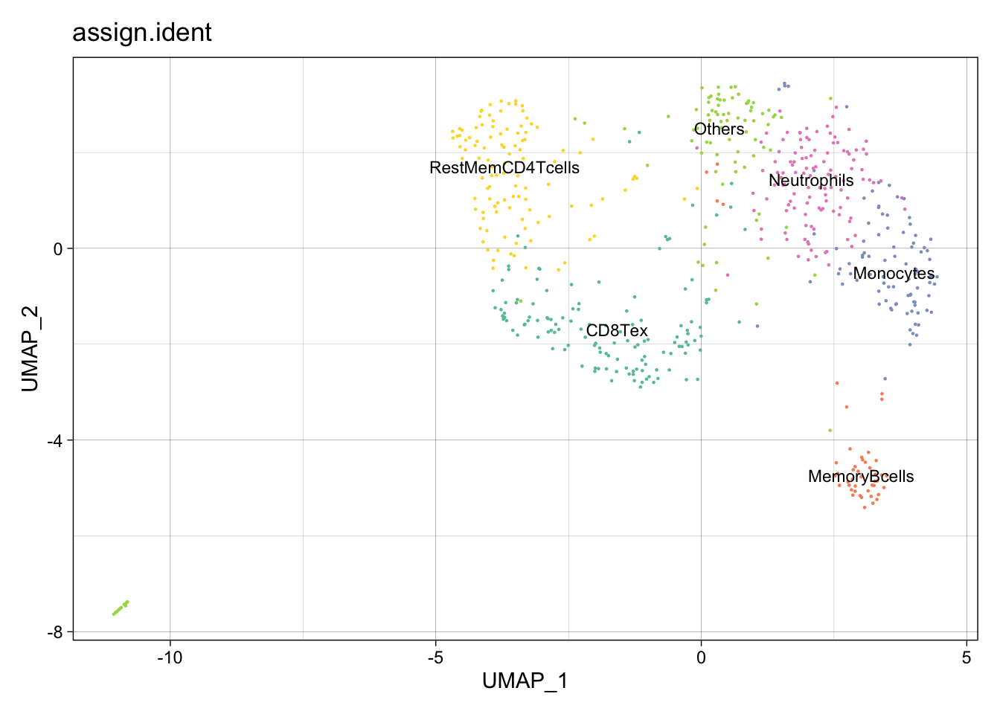
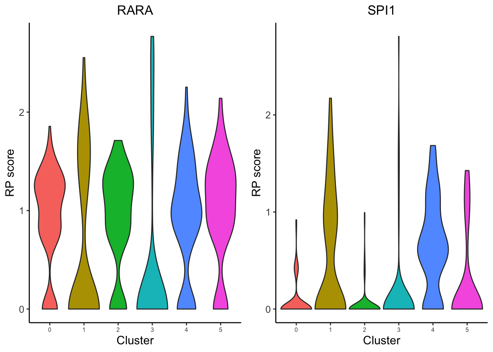
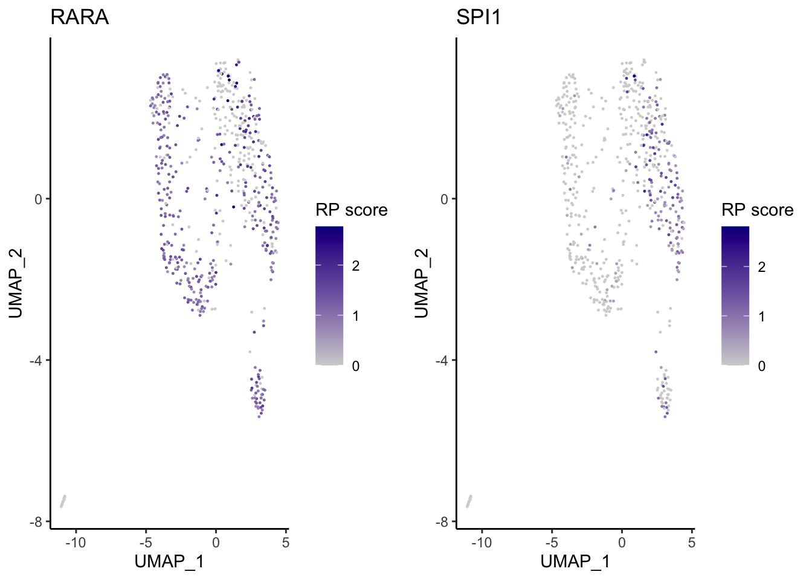

scATAC-seq custom analysis
baigal628
2021-06-07
Last updated: 2021-07-27
Checks: 7 0
Knit directory: MAESTRO_documentation/
This reproducible R Markdown analysis was created with workflowr (version 1.6.2). The Checks tab describes the reproducibility checks that were applied when the results were created. The Past versions tab lists the development history.
Great! Since the R Markdown file has been committed to the Git repository, you know the exact version of the code that produced these results.
Great job! The global environment was empty. Objects defined in the global environment can affect the analysis in your R Markdown file in unknown ways. For reproduciblity it’s best to always run the code in an empty environment.
The command set.seed(20201223) was run prior to running the code in the R Markdown file. Setting a seed ensures that any results that rely on randomness, e.g. subsampling or permutations, are reproducible.
Great job! Recording the operating system, R version, and package versions is critical for reproducibility.
Nice! There were no cached chunks for this analysis, so you can be confident that you successfully produced the results during this run.
Great job! Using relative paths to the files within your workflowr project makes it easier to run your code on other machines.
Great! You are using Git for version control. Tracking code development and connecting the code version to the results is critical for reproducibility.
The results in this page were generated with repository version 4a7b06f. See the Past versions tab to see a history of the changes made to the R Markdown and HTML files.
Note that you need to be careful to ensure that all relevant files for the analysis have been committed to Git prior to generating the results (you can use wflow_publish or wflow_git_commit). workflowr only checks the R Markdown file, but you know if there are other scripts or data files that it depends on. Below is the status of the Git repository when the results were generated:
Ignored files:
Ignored: .DS_Store
Ignored: .RData
Ignored: .Rhistory
Ignored: .Rproj.user/
Ignored: analysis/.DS_Store
Ignored: code/.DS_Store
Ignored: data/.DS_Store
Ignored: data/multi-scatac/.DS_Store
Ignored: data/multi-scrna/
Untracked files:
Untracked: .RDataTmp
Untracked: code/snRNA_genelength.R
Untracked: code/snRNA_genelength_TPM.R
Untracked: data/allen/
Untracked: data/multi-scatac/bed/
Untracked: data/multi-scatac/bigwig/GDF7_bed_added.png
Untracked: output/snRNA_TPM_VS_genelength.png
Untracked: output/snRNA_genelengthVSLognormUMI.png
Untracked: output/snRNA_genelengthVSUMI.png
Unstaged changes:
Deleted: MultiSample_scATACseq.Rproj
Deleted: atac_pbmc_500_nextgem.GIGGLE/0.peaks.bed
Deleted: atac_pbmc_500_nextgem.GIGGLE/0.peaks.bed.gz
Deleted: atac_pbmc_500_nextgem.GIGGLE/0.peaks.bed.result.xls
Modified: code/Basic_Operations.R
Modified: pbmc_1k_v3_8k_res.rds
Modified: pbmc_1k_v3_Monocyte_filtered.pdf
Modified: pbmc_1k_v3_Monocyte_top.pdf
Note that any generated files, e.g. HTML, png, CSS, etc., are not included in this status report because it is ok for generated content to have uncommitted changes.
There are no past versions. Publish this analysis with wflow_publish() to start tracking its development.
Perform custom analysis from the pipeline output
Although MAESTRO will generate all the analysis results through the snakemake-based workflow, in most cases, users might focus on specific clusters or sub-clusters or want to tune some of the parameters to improve the results. Then users can utilize the stand-alone MAESTRO R package, which has been installed in the MAESTRO conda environment, to perform custom analysis from the processed dataset (peak by cell binary matrix). We will show you how to run through the downstream analysis using the R package step by step.
Step 0. Read data
First users need to read the peak count matrix as well as the gene regulatory potential matrix generated by MAESTRO into the R enviroment. To support the processing of large datasets, in MAESTRO we use HDF5 format for all the expression, atac-seq peak count and RP tables.
library(MAESTRO)Registered S3 method overwritten by 'cli':
method from
print.boxx spatstat.geomlibrary(Seurat)Attaching SeuratObjectlibrary(Signac)
Attaching package: 'Signac'The following object is masked from 'package:Seurat':
FoldChangepbmc.peak <- Read10X_h5('./data/scatac/atac_pbmc_500_nextgem_filtered_peak_count.h5')Warning in sparseMatrix(i = indices[] + 1, p = indptr[], x = as.numeric(x =
counts[]), : 'giveCsparse' has been deprecated; setting 'repr = "T"' for youpbmc.gene <- Read10X_h5('./data/scatac/atac_pbmc_500_nextgem_gene_score.h5')Warning in sparseMatrix(i = indices[] + 1, p = indptr[], x = as.numeric(x =
counts[]), : 'giveCsparse' has been deprecated; setting 'repr = "T"' for youWe also support the processed dataset from 10x Cell Ranger pipelines, users can load the peak matrix into R through Seurat package. Then users can generate the gene regulatory score matrix by the following command. See tutorial of gene activity modelling for more details.
pbmc.peak <- Read10X_h5("outs/filtered_peak_bc_matrix.h5")
pbmc.gene <- ATACCalculateGenescore(pbmc.peaks, organism = "GRCh38")Note: If MAESTRO R package is not managed through miniconda, users may encounter the following error.
Error: Python shared library not found, Python bindings not loaded. Use reticulate::install_miniconda() if you’d like to install a Miniconda Python environment.
It means reticulate R package cannot find the python shared library. If Anaconda has been installed, users just need to specify an alternate version of python, for example:
library(reticulate)
use_python("/usr/miniconda3/bin/python", required = TRUE)
pbmc.gene <- ATACCalculateGenescore(pbmc.peak)If users don’t install Miniconda or Anaconda, we recommend to use reticulate::install_miniconda() to install a Miniconda Python environment and specify the version through use_python.
Step 1. Perform clustering analysis and differential peak calling
We next create a Seurat object using the peak count matrix and perform the clustering analysis as well as differential peak calling for different clusters. ATACRunSeurat() function in MAESTRO integrates multiple functions of Seurat and perform the routine analysis as follows.
Analysis * Dimension reduction: MAESTRO first performs dimension reduction on the input matrix. As we and others reported (Cusanovich et al, Science 2015), the Latent Semantic Index (LSI) has been widely used in learning the structure of scATAC-seq data. We use LSI as the default dimension reduction method, which has the best performance according to our benchmark. Users can tune the parameters of RunLSI via runlsi.args. For example, users can set runlsi.args = list(n = 30) to define the number of singular values to compute LSI. We also provide PCA as an optional method.
* Clustering: MAESTRO employs the graph-based clustering method in Seurat for scATAC-seq clustering analysis. Please see Seurat for the details. Briefly, MAESTRO will build a K-nearest neighbor (KNN) graph using the reduced dimensions from the previous step, and then refine the edge weights between two cells based on the Jaccard similarity of their neighborhoods, which are completed by the FindNeighbors function in Seurat. To cluster the cells, MAESTRO uses the FindClusters function in Seurat, which applies the Louvain algorithm to cluster cells together iteratively. The default clustering resolution for scATAC-seq is set to 0.6, and users can also tune the parameter for different conditions. Besides, extra parameters for FindNeighbors and FindClusters can be passed via findneighbors.args and findclusters.args. For example, users can set findneighbors.args = list(k.param = 25) to define k = 25 for the k-nearest neighbor algorithm. * UMAP visualization: UMAP is used to visualize all the single cells. MAESTRO adopts UMAP to achieve a low dimension embedding, in which similar cells are placed together. To get a better result for visualization, users can tune the parameters of RunUMAP by adding the arguments in ATACRunSeurat function, like ATACRunSeurat(inputMat = pbmc.gene, ..., n.neighbors = 20, min.dist = 0.2). * Differential peak calling: MAESTRO adopts a wilcox-test based method to identify the differential peaks for each cluster. The original peak count matrix is scaled and weighed by the total peaks present in each cell to overcome the potential ties in Wilcox-test. It will take 10-20mins to calculate the differential peaks for all the clusters. We provide FindAllMarkersMAESTRO function in MAESTRO, which is adapted from FindAllMarkers of Seurat, to reduce the computational time and memory. Peaks with logFC greater than 0.2, minimum presence faction in cells of 0.1, and p-value less than 1E-5 are identified as differential peaks for each cluster.
pbmc.ATAC.res <- ATACRunSeurat(inputMat = pbmc.peak,
project = "atac_pbmc_500_nextgem",
min.c = 50,
min.p = 500,
method = "LSI",
dims.use = 1:30,
cluster.res = 0.6,
only.pos = TRUE,
peaks.test.use = "presto",
peaks.cutoff = 1e-05,
peaks.pct = 0.1,
peaks.logfc = 0.2,
outdir = "./docs/assets/scatac/")Warning: Feature names cannot have underscores ('_'), replacing with dashes
('-')LSI analysis ...Performing TF-IDF normalizationRunning SVDScaling cell embeddingsUMAP analysis ...Warning: The default method for RunUMAP has changed from calling Python UMAP via reticulate to the R-native UWOT using the cosine metric
To use Python UMAP via reticulate, set umap.method to 'umap-learn' and metric to 'correlation'
This message will be shown once per session10:36:02 UMAP embedding parameters a = 0.9922 b = 1.11210:36:02 Read 580 rows and found 30 numeric columns10:36:02 Using Annoy for neighbor search, n_neighbors = 3010:36:02 Building Annoy index with metric = cosine, n_trees = 500% 10 20 30 40 50 60 70 80 90 100%[----|----|----|----|----|----|----|----|----|----|**************************************************|
10:36:02 Writing NN index file to temp file /var/folders/bx/3yng1lx579x084wwkjz1xc6c0000gp/T//RtmpH8qMeg/filebb0e38e972da
10:36:02 Searching Annoy index using 1 thread, search_k = 3000
10:36:02 Annoy recall = 100%
10:36:03 Commencing smooth kNN distance calibration using 1 thread
10:36:04 Initializing from normalized Laplacian + noise
10:36:04 Commencing optimization for 500 epochs, with 22356 positive edges
10:36:06 Optimization finishedWarning: The following arguments are not used: dims1, dims2, dims3, dims4,
dims5, dims6, dims7, dims8, dims9, dims10, dims11, dims12, dims13, dims14,
dims15, dims16, dims17, dims18, dims19, dims20, dims21, dims22, dims23, dims24,
dims25, dims26, dims27, dims28, dims29, dims30Warning: The following arguments are not used: dims1, dims2, dims3, dims4,
dims5, dims6, dims7, dims8, dims9, dims10, dims11, dims12, dims13, dims14,
dims15, dims16, dims17, dims18, dims19, dims20, dims21, dims22, dims23, dims24,
dims25, dims26, dims27, dims28, dims29, dims30Computing nearest neighbor graph
Computing SNNModularity Optimizer version 1.3.0 by Ludo Waltman and Nees Jan van Eck
Number of nodes: 580
Number of edges: 17700
Running Louvain algorithm...
Maximum modularity in 10 random starts: 0.8328
Number of communities: 6
Elapsed time: 0 secondsIdentify cluster specific peaks ...ATACRunSeurat() returns a list of a Seurat object ATAC and dataframe peaks. Please see Seurat Github wiki for more details of the Seurat object structure. Users can use the str() command to get an intuitive understanding of the object.
pbmc.ATAC.res$ATACAn object of class Seurat
16376 features across 580 samples within 1 assay
Active assay: ATAC (16376 features, 16376 variable features)
2 dimensional reductions calculated: lsi, umaphead(pbmc.ATAC.res$peaks) p_val avg_logFC pct.1 pct.2 p_val_adj cluster
1 3.480911e-48 0.5700408 0.538 0.027 4.563023e-44 0
2 5.572818e-48 0.5424619 0.554 0.031 4.563023e-44 0
3 4.867950e-46 0.5743353 0.546 0.036 2.657251e-42 0
4 2.862799e-45 0.5565842 0.515 0.029 1.172030e-41 0
5 8.140127e-45 0.5222754 0.477 0.018 2.666055e-41 0
6 1.372764e-44 0.5297140 0.508 0.027 3.746731e-41 0
peak
1 chr2-241762519-241764351
2 chr7-38232621-38233409
3 chr17-47829777-47830462
4 chr19-51372654-51373498
5 chr17-49715177-49716212
6 chr2-231425811-231426595
| Version | Author | Date |
|---|---|---|
| df0c288 | baigal628 | 2021-06-08 |
Step 2. Annotate cell types
We next try to annotate different clusters based on their marker genes. For scATAC, MAESTRO provides two methods to annotate cell types. One is based on inferred gene activity. MAESTRO uses the gene regulatory potential (RP model, see the paper for more details) to quantify gene expression. So, we first need to use ATACAttachGenescore() to pass the gene regulatory potential matrix to the clustering result, and then perform differential gene analysis for each cluster on the gene RPscore matrix and identify the marker genes. We use public immune signatures like CIBERSORT to annotate the clusters. Users can also use their own signatures to annotate the clusters. Cell type information is stored in Object@meta.data$assign.ident.
pbmc.ATAC.res$ATAC <- ATACAttachGenescore(ATAC = pbmc.ATAC.res$ATAC, RPmatrix = pbmc.gene)Warning: Feature names cannot have underscores ('_'), replacing with dashes
('-')Centering and scaling data matrixdata(human.immune.CIBERSORT)
pbmc.ATAC.res$ATAC <- ATACAnnotateCelltype(ATAC = pbmc.ATAC.res$ATAC,
signatures = human.immune.CIBERSORT,
min.score = 0.1,
genes.test.use = "presto",
genes.cutoff = 1E-5,
outdir = "./docs/assets/scatac")Identify cluster specific genes based on RP score ...head(pbmc.ATAC.res$ATAC@meta.data) orig.ident nCount_ATAC nFeature_ATAC
AAACTGCAGACTCGGA atac_pbmc_500_nextgem 2682 2682
AAAGATGCACCTATTT atac_pbmc_500_nextgem 3658 3658
AAAGATGCAGATACAA atac_pbmc_500_nextgem 6958 6958
AAAGATGCAGTTACAC atac_pbmc_500_nextgem 862 862
AAAGGGCTCGCTCTAC atac_pbmc_500_nextgem 6258 6258
AAATGAGAGTCCCGCA atac_pbmc_500_nextgem 2091 2091
ATAC_snn_res.0.6 seurat_clusters nCount_ACTIVITY
AAACTGCAGACTCGGA 1 1 2746.8879
AAAGATGCACCTATTT 4 4 3730.1817
AAAGATGCAGATACAA 0 0 7009.5097
AAAGATGCAGTTACAC 3 3 890.4284
AAAGGGCTCGCTCTAC 4 4 6236.5147
AAATGAGAGTCCCGCA 1 1 2052.6547
nFeature_ACTIVITY assign.ident assign.score assign.celltype
AAACTGCAGACTCGGA 5406 Neutrophils 0.3999863 Neutrophils
AAAGATGCACCTATTT 6807 Monocytes 0.6256015 Monocytes
AAAGATGCAGATACAA 10878 CD8Tex 0.6780347 CD8Tex
AAAGATGCAGTTACAC 1815 Others 0.0000000 Others
AAAGGGCTCGCTCTAC 10355 Monocytes 0.6256015 Monocytes
AAATGAGAGTCCCGCA 4288 Neutrophils 0.3999863 Neutrophils
Another method ATACAnnotateChromatinAccessibility to annotate scATAC-seq data is based on chromatin accessibility directly. MAESTRO incorporates public bulk chromatin accessibility data (DNase-seq and ATAC-seq) from Cistrome database. All the datesets are clustered into 80 clusters and the cluster identities are determined by the cell-type or tissue type information of datasets within each cluster. For scATAC-seq clusters, MAESTRO utilizes giggle to evaluate the enrichment of bulk chromatin accessibility peaks on cluster-specific peaks from scATAC-seq data. Then the Cistrome cluster identity from the most enriched bulk chromatin accessibility data is used to represent the cell-type annotation for the scATAC-seq cluster. Giggle has been installed in the MAESTRO conda environment. If users only installed the stand-alone R pcakage, please install giggle first. Users need to download the giggle index from Cistrome website (Note: If the version of MAESTRO is higher than v1.2.0, please update the giggle index to the latest), and provide the file location of the index to ATACAnnotateChromatinAccessibility. Cell type annotation based on bulk chromatin accessibility data is stored in Object@meta.data$biological_resource.
pbmc.ATAC.res$ATAC <- ATACAnnotateChromatinAccessibility(ATAC = pbmc.ATAC.res$ATAC,
peaks = pbmc.ATAC.res$peaks,
project = "atac_pbmc_500_nextgem",
giggle.path = "/Users/galib/Downloads/giggle.all",
organism = "GRCh38")
p <- DimPlot(pbmc.ATAC.res$ATAC, label = TRUE, reduction = "umap", group.by = "biological_resource", repel=T, pt.size = 0.5, label.size = 2.5)
ggsave(file.path(paste0(result$ATAC@project.name, "_CistromeTop_annotated.png")), p, width=7.5, height=4)All the reduction results are stored in Object@reductions. For example, users can use Object@reductions$umap@cell.embeddings to extract the cell embedding result of UMAP for custom plotting. Or users can directly use DimPlot() from Seurat and other functions like theme() from ggplot2 to generate a prettier plot.
library(ggplot2)
library(RColorBrewer)
p2 <- DimPlot(object = pbmc.ATAC.res$ATAC, label = TRUE, pt.size = 0.15,
group.by = "assign.ident", label.size = 3,
cols = brewer.pal(8,"Set2")) +
theme_linedraw() + NoLegend()
p2
| Version | Author | Date |
|---|---|---|
| f083ec5 | baigal628 | 2021-06-08 |
Step 3. Identify driver transcription regulators
To identify enriched transcription regulators is crucial to understanding gene regulation in the heterogeneous single-cell populations. MAESTRO utilizes giggle to identify enrichment of transcription factor peaks in scATAC-seq cluster-specific peaks.
After identifying enriched transcription regulators, MAESTRO also provides the potential target gene list of the top 10 transcription factors for each cluster, which are based on the ChIP-seq profiles from CistromeDB. The target genes will be generated in the project.GIGGLE directory.
pbmc.ATAC.tfs <- ATACAnnotateTranscriptionFactor(ATAC = pbmc.ATAC.res$ATAC,
peaks = pbmc.ATAC.res$peaks,
project = "atac_pbmc_500_nextgem",
giggle.path = "/Users/galib/Downloads/giggle.all")
pbmc.ATAC.tfs[["0"]]Besides indentifying TFs for all the clusters, we also support the differential peaks from a single comparison.
DefaultAssay(pbmc.ATAC.res$ATAC) = "ATAC"
de.peakset <- FindMarkersMAESTRO(pbmc.ATAC.res$ATAC, ident.1 = c(0,2,10,12))
pbmc.ATAC.monocyte.tfs <- ATACAnnotateTranscriptionFactor(ATAC = pbmc.ATAC.res$ATAC,
peaks = de.peakset,
cluster = c(0,2,10,12),
project = "atac_pbmc_500_nextgem",
giggle.path = ""/Users/galib/Downloads/giggle.all")Visualize driver transcription factors for each cluster According to the annotation of the clusters, we know that cluster 4 is Monocytes. Next, we want to visualize the enriched regulators in Monocytes from
Step 4. Visualize driver transcription factors for each cluster
Visualize driver transcription factors for each cluster According to the annotation of the clusters, we know that cluster 4 is Monocytes. Next, we want to visualize the enriched regulators in Monocytes from Step4.
The output TFs from MAESTRO have already been pre-filtered using TF regulatory potential score.
tfs <- sapply(pbmc.ATAC.tfs[["1"]], function(x) {return(unlist(strsplit(x, split = " | ", fixed = TRUE))[1])})
p <- VisualizeTFenrichment(TFs = tfs,
cluster.1 = 4,
type = "ATAC",
SeuratObj = pbmc.ATAC.res$ATAC,
GIGGLE.table = "atac_pbmc_500_nextgem.PredictedTFScore.txt",
visual.totalnumber = 100,
name = "atac_pbmc_500_nextgem_Monocyte_filtered")If users want to visualize the top factors without filtering using regulatory potential. Please leave the TFs to blank, then the top 10 regulators will be visualized.
VisualizeTFenrichment(cluster.1 = 4,
type = "ATAC",
SeuratObj = pbmc.ATAC.res$ATAC,
GIGGLE.table = "atac_pbmc_500_nextgem_giggle.txt",
visual.topnumber = 10,
visual.totalnumber = 100,
name = "atac_pbmc_500_nextgem_Monocyte_top")To further filter the regulators, users may want to visualize the expression level of the predicted transcription factors. Here, we use the gene regulatory potential score as the predicted gene expression level. We provide the function for visualize TF/genes regulatory potential using Vlnplot and Umap.
VisualizeVlnplot(genes = c("SPI1","RARA"),
type = "ATAC",
SeuratObj = pbmc.ATAC.res$ATAC,
ncol = 2,
width = 9,
height = 4,
name = "atac_pbmc_500_nextgem_Monocyte")Warning: CombinePlots is being deprecated. Plots should now be combined using
the patchwork system.
| Version | Author | Date |
|---|---|---|
| 71fb9af | baigal628 | 2021-06-21 |
VisualizeUmap(genes = c("SPI1","RARA"),
type = "ATAC",
SeuratObj = pbmc.ATAC.res$ATAC,
ncol = 2,
width = 8,
height = 3,
name = "atac_pbmc_500_nextgem_Monocyte")Warning: CombinePlots is being deprecated. Plots should now be combined using
the patchwork system.
| Version | Author | Date |
|---|---|---|
| 3e0057c | baigal628 | 2021-07-13 |
Based on the regulatory potential of TFs, we can see that SPI1 is highly expressed in the Monocytes from PBMC, while RARA is generally distributed among all cell-types.
MAESTRO can also provide a genome browser function ATACViewTrack for visualizing the scATAC-seq signal for different clusters. The fragment file fragments_corrected_count.tsv.gz and its index fragments_corrected_count.tsv.gz.tbi are needed for this function. If users start from the output of 10x Cell Ranger pipeline, fragments.tsv.gz and fragments.tsv.gz.tbi are the substitutes.
library(TxDb.Hsapiens.UCSC.hg38.knownGene)
library(org.Hs.eg.db)
txdb = TxDb.Hsapiens.UCSC.hg38.knownGene
genome = "hg38"
fragment = "../Mapping/fragments_corrected_count.tsv.gz"
meta_info = data.frame(cell = rownames(pbmc.ATAC.res[["ATAC"]]@meta.data),
cluster = pbmc.ATAC.res[["ATAC"]]@meta.data$seurat_clusters,
depth = pbmc.ATAC.res[["ATAC"]]@meta.data$nCount_ATAC)
ATACViewTrack(gene_name = "SPI1", downstream = 8000,
yaxis_cex = 1,
fragment = fragment,
grouping = meta_info,
tick_label_cex = 1, tick.dist = 5000,
track_cols = "blue",
label_cex = 1,
minor.tick.dist = 1000, label.margin = -0.6,
txdb = txdb,
genome = genome)Step 5. Save the project for future analysis
Finally, users can save the R project, including the raw data, normalized data, clustering result, and meta information for future analysis.
saveRDS(pbmc.ATAC.res, "atac_pbmc_500_nextgem_res.rds")The differential peaks, predicted TFs, and target genes and all the figures have already been saved in the current directory by MAESTRO.
sessionInfo()R version 4.1.0 (2021-05-18)
Platform: x86_64-apple-darwin17.0 (64-bit)
Running under: macOS Big Sur 10.16
Matrix products: default
BLAS: /Library/Frameworks/R.framework/Versions/4.1/Resources/lib/libRblas.dylib
LAPACK: /Library/Frameworks/R.framework/Versions/4.1/Resources/lib/libRlapack.dylib
locale:
[1] en_US.UTF-8/en_US.UTF-8/en_US.UTF-8/C/en_US.UTF-8/en_US.UTF-8
attached base packages:
[1] stats graphics grDevices utils datasets methods base
other attached packages:
[1] RColorBrewer_1.1-2 ggplot2_3.3.5 Signac_1.2.1 SeuratObject_4.0.2
[5] Seurat_4.0.1 MAESTRO_1.5.0 workflowr_1.6.2
loaded via a namespace (and not attached):
[1] rappdirs_0.3.3 SnowballC_0.7.0
[3] rtracklayer_1.52.0 scattermore_0.7
[5] tidyr_1.1.3 bit64_4.0.5
[7] knitr_1.33 irlba_2.3.3
[9] DelayedArray_0.18.0 data.table_1.14.0
[11] rpart_4.1-15 KEGGREST_1.32.0
[13] RCurl_1.98-1.3 AnnotationFilter_1.16.0
[15] generics_0.1.0 BiocGenerics_0.38.0
[17] GenomicFeatures_1.44.0 callr_3.7.0
[19] cowplot_1.1.1 usethis_2.0.1
[21] RSQLite_2.2.7 EnsDb.Mmusculus.v79_2.99.0
[23] RANN_2.6.1 future_1.21.0
[25] bit_4.0.4 spatstat.data_2.1-0
[27] xml2_1.3.2 lubridate_1.7.10
[29] httpuv_1.6.1 SummarizedExperiment_1.22.0
[31] assertthat_0.2.1 xfun_0.24
[33] hms_1.1.0 jquerylib_0.1.4
[35] evaluate_0.14 promises_1.2.0.1
[37] fansi_0.5.0 restfulr_0.0.13
[39] progress_1.2.2 caTools_1.18.2
[41] dbplyr_2.1.1 igraph_1.2.6
[43] DBI_1.1.1 htmlwidgets_1.5.3
[45] sparsesvd_0.2 spatstat.geom_2.2-0
[47] stats4_4.1.0 purrr_0.3.4
[49] ellipsis_0.3.2 RSpectra_0.16-0
[51] dplyr_1.0.7 backports_1.2.1
[53] biomaRt_2.48.1 deldir_0.2-10
[55] MatrixGenerics_1.4.0 vctrs_0.3.8
[57] Biobase_2.52.0 remotes_2.4.0
[59] ensembldb_2.16.0 ROCR_1.0-11
[61] abind_1.4-5 cachem_1.0.5
[63] withr_2.4.2 ggforce_0.3.3
[65] presto_1.0.0 checkmate_2.0.0
[67] sctransform_0.3.2 GenomicAlignments_1.28.0
[69] prettyunits_1.1.1 goftest_1.2-2
[71] cluster_2.1.2 lazyeval_0.2.2
[73] crayon_1.4.1 hdf5r_1.3.3
[75] labeling_0.4.2 pkgconfig_2.0.3
[77] slam_0.1-48 tweenr_1.0.2
[79] GenomeInfoDb_1.28.0 nlme_3.1-152
[81] pkgload_1.2.1 ProtGenerics_1.24.0
[83] nnet_7.3-16 devtools_2.4.2
[85] rlang_0.4.11 globals_0.14.0
[87] lifecycle_1.0.0 miniUI_0.1.1.1
[89] filelock_1.0.2 BiocFileCache_2.0.0
[91] rprojroot_2.0.2 polyclip_1.10-0
[93] matrixStats_0.59.0 lmtest_0.9-38
[95] Matrix_1.3-4 ggseqlogo_0.1
[97] zoo_1.8-9 base64enc_0.1-3
[99] whisker_0.4 ggridges_0.5.3
[101] processx_3.5.2 png_0.1-7
[103] viridisLite_0.4.0 rjson_0.2.20
[105] bitops_1.0-7 KernSmooth_2.23-20
[107] Biostrings_2.60.1 blob_1.2.1
[109] stringr_1.4.0 forestplot_1.10.1
[111] parallelly_1.26.0 jpeg_0.1-8.1
[113] S4Vectors_0.30.0 scales_1.1.1
[115] memoise_2.0.0 magrittr_2.0.1
[117] plyr_1.8.6 ica_1.0-2
[119] gplots_3.1.1 zlibbioc_1.38.0
[121] compiler_4.1.0 Gmisc_1.10.0
[123] BiocIO_1.2.0 fitdistrplus_1.1-5
[125] Rsamtools_2.8.0 cli_3.0.0
[127] XVector_0.32.0 listenv_0.8.0
[129] patchwork_1.1.1 pbapply_1.4-3
[131] ps_1.6.0 htmlTable_2.2.1
[133] Formula_1.2-4 MASS_7.3-54
[135] mgcv_1.8-36 tidyselect_1.1.1
[137] stringi_1.6.2 highr_0.9
[139] yaml_2.2.1 latticeExtra_0.6-29
[141] ggrepel_0.9.1 grid_4.1.0
[143] sass_0.4.0 fastmatch_1.1-0
[145] EnsDb.Hsapiens.v86_2.99.0 tools_4.1.0
[147] future.apply_1.7.0 parallel_4.1.0
[149] rstudioapi_0.13 foreign_0.8-81
[151] lsa_0.73.2 git2r_0.28.0
[153] gridExtra_2.3 farver_2.1.0
[155] Rtsne_0.15 digest_0.6.27
[157] shiny_1.6.0 qlcMatrix_0.9.7
[159] Rcpp_1.0.6 GenomicRanges_1.44.0
[161] later_1.2.0 RcppAnnoy_0.0.18
[163] httr_1.4.2 AnnotationDbi_1.54.1
[165] colorspace_2.0-2 XML_3.99-0.6
[167] fs_1.5.0 tensor_1.5
[169] reticulate_1.20 IRanges_2.26.0
[171] splines_4.1.0 uwot_0.1.10
[173] RcppRoll_0.3.0 spatstat.utils_2.2-0
[175] sessioninfo_1.1.1 plotly_4.9.4.1
[177] xtable_1.8-4 jsonlite_1.7.2
[179] testthat_3.0.3 R6_2.5.0
[181] Hmisc_4.5-0 pillar_1.6.1
[183] htmltools_0.5.1.1 mime_0.11
[185] glue_1.4.2 fastmap_1.1.0
[187] BiocParallel_1.26.0 codetools_0.2-18
[189] pkgbuild_1.2.0 utf8_1.2.1
[191] lattice_0.20-44 bslib_0.2.5.1
[193] spatstat.sparse_2.0-0 tibble_3.1.2
[195] curl_4.3.2 leiden_0.3.8
[197] gtools_3.9.2 survival_3.2-11
[199] rmarkdown_2.9 docopt_0.7.1
[201] desc_1.3.0 munsell_0.5.0
[203] GenomeInfoDbData_1.2.6 reshape2_1.4.4
[205] gtable_0.3.0 spatstat.core_2.2-0